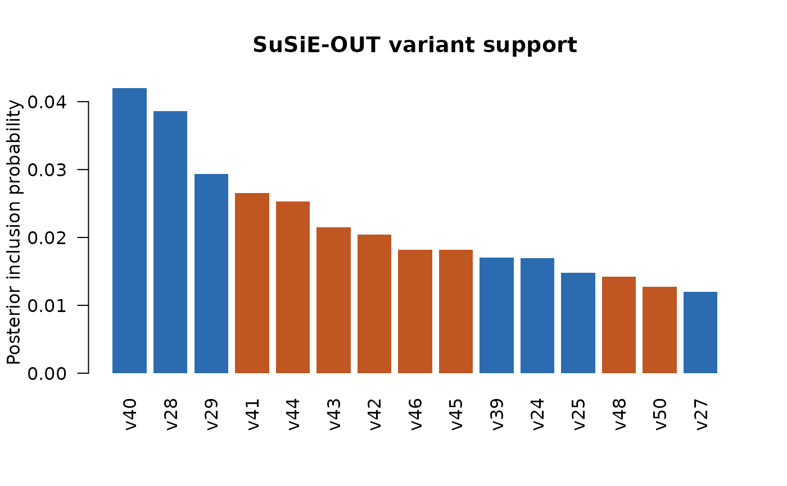

Summarize, print, plot, and predict from a SuSiE-OUT fit
Source:R/methods.R
susieout_fit-methods.Rdsummary() collects locus-level quantities and the ten best-supported
variants; print() displays that summary. plot() draws a locus plot
(susieout_locuszoom(), the default when ggplot2 and cowplot
are installed), a bar chart of the highest PIPs coloured by tested (blue)
or omitted (orange) state, or the null, tested and OUT probabilities of each
single-effect component.
predict() returns fitted z scores, residuals, variant support, or the
probability that at least one causal variant was omitted.
Usage
# S3 method for class 'susieout_fit'
summary(object, ...)
# S3 method for class 'summary.susieout_fit'
print(x, ...)
# S3 method for class 'susieout_fit'
print(x, ...)
# S3 method for class 'susieout_fit'
plot(x, type = c("locuszoom", "pip", "components"), top = 30L, ...)
# S3 method for class 'susieout_fit'
predict(
object,
newdata = NULL,
type = c("z", "residual", "candidate_support", "outside_probability"),
...
)Arguments
- object, x
A
susieout_fitobject.- ...
For
plot(), further arguments passed tosusieout_locuszoom()(type = "locuszoom", for examplepositionsandgenes) or tographics::barplot()(the other types). Ignored by the other methods.- type
For
plot(),"locuszoom","pip"or"components". Forpredict(), one of"z","residual","candidate_support", or"outside_probability".- top
Number of variants to show in the
"pip"bar chart.- newdata
Optional fingerprint matrix with one column per tested and omitted variant; if supplied with
type = "z", the fitted effects are projected onto it.
Value
summary() returns an object of class summary.susieout_fit.
print() and plot() return their input invisibly. predict() returns
a numeric vector, a data frame (for "candidate_support"), or a scalar
(for "outside_probability").
Examples
locus <- susieout_simulate_locus(1, architecture = "entirely_omitted")
fit <- susieout_fit(
locus$z, locus$n, locus$R_analysis, locus$wgs_ld, locus$examined_ids
)
summary(fit)
#> SuSiE-OUT fine-mapping summary
#> backend: openworld_ibss
#> variants: 40 tested + 10 omitted
#> P(any causal omitted): 0.1669
#> P(candidate set complete): 0.8331
#> converged: TRUE in 7 iterations
#>
#> Top variant support:
#> variant_id state pip maximum_component_probability
#> v40 inside 0.04196349 0.004277781
#> v28 inside 0.03861921 0.003930730
#> v29 inside 0.02933064 0.002972515
#> v41 outside 0.02656404 0.002688715
#> v44 outside 0.02528099 0.002557339
#> v43 outside 0.02146891 0.002167927
#> v42 outside 0.02043172 0.002062213
#> v46 outside 0.01817935 0.001832987
#> v45 outside 0.01817332 0.001832374
#> v39 inside 0.01703858 0.001717069
plot(fit, type = "pip", top = 15)

predict(fit, type = "outside_probability")
#> [1] 0.1669364